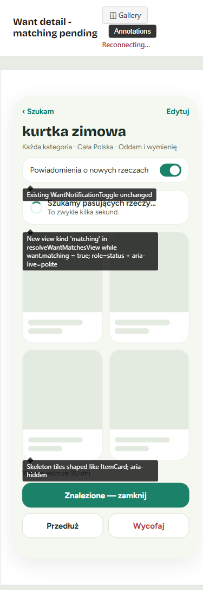
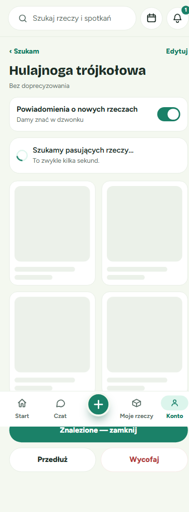
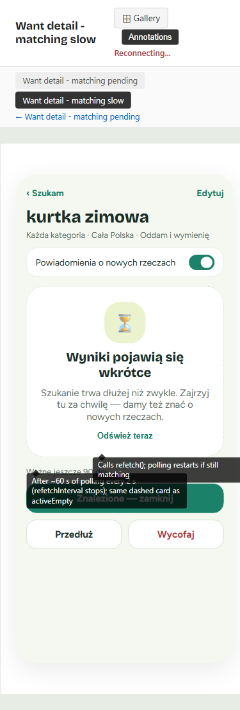
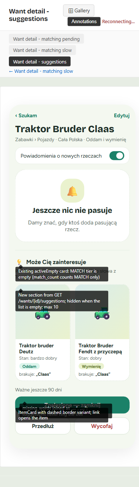
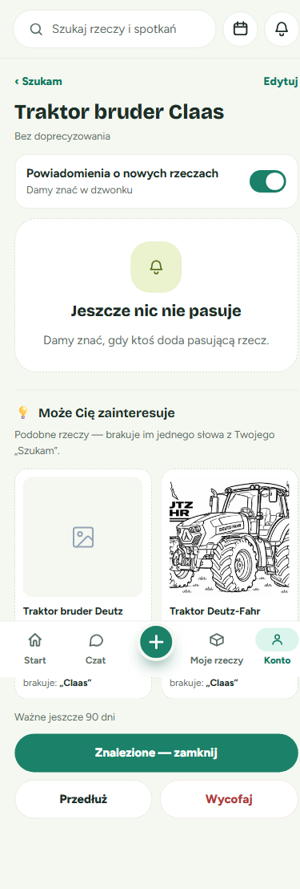
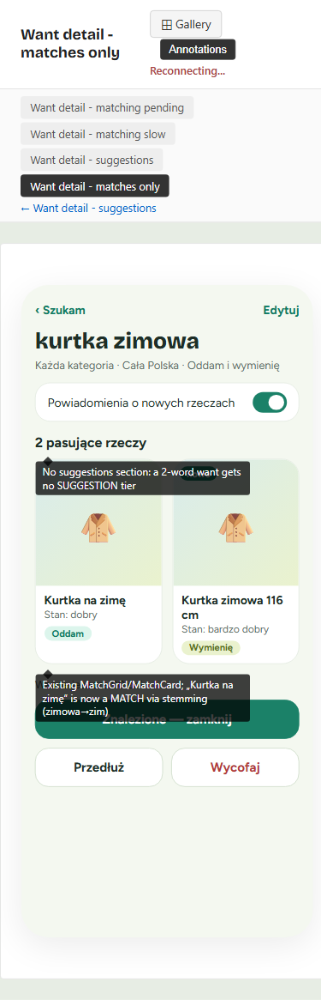
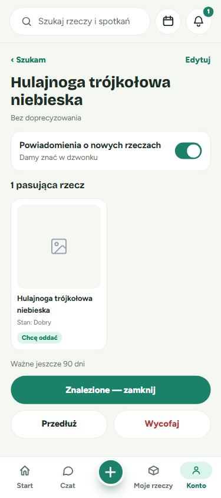
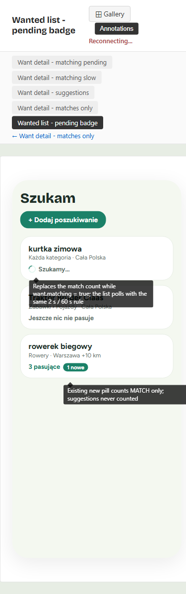

✓ screen:want-matching — Match
Header → toggle → status row → 2×2 skeleton grid (aria-hidden) → validity → actions, same order. Actions unchanged.


✓ component:matching-status — Match
Inline card row with a spinner, „Szukamy pasujących rzeczy…” + „To zwykle kilka sekund.”; role=status, aria-live=polite; spinner aria-hidden, motion-reduce respected.
✓ screen:want-matching-slow — Match
Dashed card, ⏳ tile (aria-hidden), heading and body copy word for word, text button „Odśwież teraz”; role=status polite; no skeleton. Resume verified (13).


✓ screen:want-results — Match
Empty dashed card → bordered section → „💡 Może Cię zainteresuje” h2 (aria-labelledby, emoji aria-hidden) → lead copy → 2-column grid → validity → actions.


✓ component:suggestion-card — Match
ItemCard tile with a dashed border, name, „Stan: …”, mode pill, „brakuje: „Claas”” with the word bold, no „nowe”; links to the item.

✓ screen:want-results-matches-only — Match
Count line → MatchCards with „nowe” on unseen pairs (see 08) → no suggestions section.


⚠ screen:wanted-list — Minor deviation
Match: spinner + „Szukamy…” in role=status replaces the counts. Deviation (pre-existing, unchanged by this task): the empty card reads „Jeszcze nic · powiadomimy Cię” with a bell on a cream pill, counts sit in a full-width green pill, the page has „‹ Konto” / „+ Dodaj” (mockup: „+ Dodaj poszukiwanie”), each card has a validity line. Impact: none on the new element.
